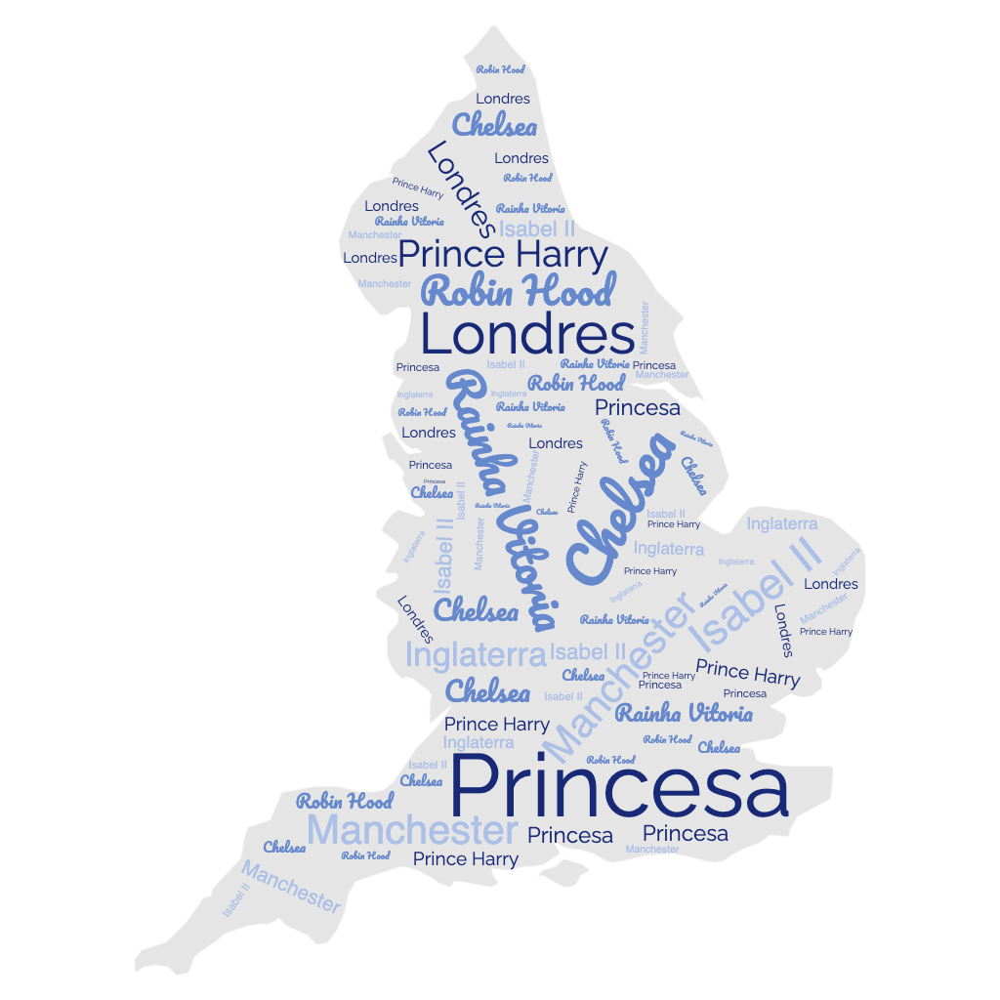

🏴 Londres 🏴

Home | Introdução | Localização | Multimédia | Informações
Londres está localizada no sul da Inglaterra e é a capital política e econômica do Reino Unido. O centro da cidade está situado a 60 km da desembocadura do Tâmisa, rio que percorre a cidade.
Sua privilegiada localização no centro sudeste da Inglaterra a beneficiou, já que, durante muito tempo, foi a região mais povoada e rica do país. A cidade não aparece até depois da conquista romana. O domínio romano se estendeu desde o século I d.C. até o século V, quando o Império caiu. No século III, Londinium, com seu porto, era um importante núcleo de população, com cerca de 50.000 habitantes Arruinada pelas invasões anglo-saxãs do século V, no século VII se tornou a capital do pequeno reino Essex e foi sede episcopal.
"Peixe"
🧔🎣🐟🐟🐟🐟🐟
🧔🎣🐟🐟🐟
🐟🐟🐟🧞
🐟🐟🧞
🐟 🧞
🧔❓❓🤬
🧔⌛⌛
🧔⛓️🧞⛓️
🧞🌠🤞🧔
💪🧔💪 -> 🔓🧞
🤴🎤🧔->👳🔓🧞
👳⚔️👦👦👦👦
👳🙌 🗿🔓🧞
🔓🧞🔓🧞
🌊 🌊 🌊
🌊🌊 🌊🌊 🌊🌊 🌊🌊🌊
🌊🌊🌊🌊🌊🌊🌊🌊🌊🌊🌊🌊🌊🌊🌊
Uma lenda do Robin hood:
A origem exata de Robin Hood é difícil de determinar. Isso ocorre porque várias regiões diferentes do país têm suas próprias histórias e adaptações de Robin Hood. Embora
existam várias adaptações diferentes da história,Robin Hood é conhecido como um arqueiro altamente qualificado que lutou contra a corrupção do xerife Nottingham.Robin Hood fez isso para proteger as pessoas. Os contos de suas aventuras geralmente incluíam seu bando de Merry Men e seu interesse amoroso,Maid Marian. .
Suas histórias incluem atividades como roubar dos ricos ou, mais especificamente, do xerife Nottingham, e dar os bens roubados aos pobres. Interromper os planos nefastos do xerife Nottingham também fazia parte dos planos de Robin Hood.
Estrutura do Website
Esta atividade foi elaborada no ambito da UC de Programação Web. Alguns dos métodos implementados no decorrer deste trabalho foram resultado de pesquisa minha, sendo que os conteudos leccionados nas aulas ainda são reduzidos.
Com o decorrer das aulas espero conseguir implementar novos elementos na construção de websites.
